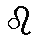
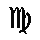
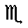
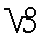
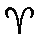
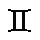

|
INTRODUCTION
Le sonnet chez Michel Galiana est une structure
très stricte composée de 14 vers de 12 ou 11 pieds
répartis en 2 quatrains suivis de 2 tercets.
Pour les rimes, il s'impose parfois une sujétion non
prévue dans le schéma fixé par Théodore de Banville
(ABBA ABBA CCD EDE), en s'obligeant à reprendre les
rimes du premier tercet dans le second, tout en en
modifiant l'arrangement:
ABBA ABBA CDC DDC, ABBA ABBA CCD DCD,
ABBA ABBA CCD CDD, etc...
Ici, l'auteur complique encore l'exercice en
s'imposant les contraintes suivantes:
-Chacun des 12 premiers sonnets, décrivant un des
travaux d'Hercule, contient, sous une forme propre
ou dérivée, le nom d'un signe zodiacal, dans
l'ordre, en commençant par le Lion (en MAJUSCULES).
-S'inspirant, peut-être, des "Fables Egyptiennes et
Grecques dévoilées" de Joseph-Antoine Pernety
(1716-1801), il énonce dans les strophes de trois lignes
une opération (parfois plus) du Grand Oeuvre des alchimistes,
sans doute en rapport avec le signe zodiacal
(italiques) et censée interpréter chacun
des travaux.
-Il multiplie les évocations des 4 éléments,
ici repérées par des couleurs: rouge, le feu ;
bleu, l'eau; vert, l'air; marron, la terre, et
l'atmosphère de chaque poème est alternativement solaire
(lumineuse) et lunaire (ténébreuse).
Ajouté par recours à l'IA en 2026
Hercule combattant, de Michel Galiana, n’est pas une simple reprise des Douze Travaux, mais un itinéraire hermétique complet, une ascension métaphysique sous les traits du mythe. Chaque sonnet correspond à l’un des douze signes du zodiaque, dans un ordre rigoureux allant du Lion au Cancer, et chacun est régi par l’un des quatre éléments — Feu, Terre, Air, Eau — selon une alternance rythmée. À chaque travail est associée une opération alchimique : calcination, dissolution, séparation, conjonction, putréfaction, congélation, nutrition, fermentation, distillation, multiplication, projection. Ces opérations n’illustrent pas le mythe ; elles le transforment. Hercule ne s’y présente pas comme un héros de force brute, mais comme un adepte accomplissant le Grand Œuvre.
Le cycle s’ouvre dans l’embrasement du Lion, où le novice apprend que la destruction n’est pas une victoire, mais une purification. Dès lors, chaque travail révèle une facette du soi : la rage, la peur, la faim, le désir, l’orgueil, la vitesse, le chaos et ce double qui hante toute conscience. Les monstres ne sont pas des adversaires extérieurs, mais des configurations intérieures : les têtes proliférantes de l’Hydre, le déséquilibre du sanglier, le plaisir insaisissable de l’Amazone, la faim dévorante des juments, la force aveugle du taureau. À chaque rencontre, Hercule découvre que la créature qu’il dompte fait aussi partie de lui-même.
À mesure que progresse le zodiaque, les poèmes s’assombrissent et s’intériorisent. Le héros apprend à se nourrir de lui-même plutôt que du monde, à réconcilier l’amant et l’aimé, à distiller l’or caché dans les grottes de ses propres nuits, à reconnaître le jumeau qui multiplie le jardin invisible. Au onzième sonnet, il a cessé de combattre des monstres ; il affronte la part de lui-même qui lui échappe, ce double nocturne qui traverse le fleuve du temps.
Le douzième sonnet, Hercule aux Enfers, marque l’ultime opération alchimique : la projection. Hercule pénètre dans le royaume des morts et découvre que les éléments — feu, eau, air, terre — sont impuissants lorsqu’ils sont isolés. Sa chair devient fumée, ardeur, pierre et, enfin, lumière. Il devient le creuset où s’unissent les contraires.
Michel ajoute un treizième sonnet, Oeta, qui constitue l’accomplissement du cycle. Ici, tous les éléments sont convoqués et niés. Hercule troque un néant contre un néant suprême, ce seuil où le moi se dissout et où surgit le dieu inconnu. Sa chair devient tombeau, envol et lien : matière, esprit et le trait d'union entre eux. Les Travaux ne s'achèvent pas dans le triomphe, mais dans la transfiguration.
Ainsi, Hercule combattant constitue une ascension alchimique intégrale, une méditation zodiacale sur la dissolution et la reconstitution du moi. C'est un cycle où le mythe se fait métaphysique et où le héros devient l'Œuvre elle-même — le feu, la pierre, la nuit et, enfin, la lumière qui leur survit.
I Le Lion de Némée Lion  Calcination
II L'Hydre de Lerne Vierge  Dissolution
III Le Sanglier d'Erymanthe Balance Séparation
IV La Biche aux pieds d'airain Scorpion  Conjonction
V Les Oiseaux du Lac Stymphale Sagittaire Putréfaction
VI Le Taureau de Crête Capricorne  Congélation
VII Les Cavales de Diomède Verseau Digestion
VIII La Ceinture de l'Amazone Poisson Sublimation
IX Les Ecuries d'Augias Bélier  Fermentation
X Le Troupeau de Géryon Taureau Distillation
XI Les Pommes des Hespérides Gémeaux  Multiplication
XII Hercule aux Enfers Cancer Projection
Oeta
|
INTRODUCTION
Michel Galiana's sonnets have a strict structure
made up of 14 verses of 12 or 11 feet, grouped
together into two quatrains followed by two triplets.
As to the rhymes he sets himself a constraint the
theorists of French sonnet, had shunned when they
laid down the diagram:(ABBA ABBA CCD EDE).
Michel makes here a point of using the same rhymes,
arranged in different ways in both tercets:
ABBA ABBA CDC DDC, ABBA ABBA CCD DCD,
ABBA ABBA CCD CDD, etc...
To make the exercise more thrilling, in this set
of 13 sonnets he devised additional constraints:
-Each of the first twelve sonnets, picturing one
of Hercules' labours contains the explicit or
allusive name of a zodiac sign, in chronological
order beginning from the Lion (in CAPITAL letters).
-Possibly in accordance with the "Egyptian and
Greek Fables Unveiled" by Joseph-Antoine Pernety
(1716-1801), the last triplets quote an operation
(sometimes more) pertaining to the Work of the alchemists, very
likely in connection with the zodiac sign of the
poem (in italics) and supposed to be an
interpretation of each Labour.
-He repeatedly evokes the four elements, here
printed in colours: red=fire, blue=water, green
=air, brown=earth and each individual sonnet
bathes alternately in a solar (bright) and a lunar (dark) atmosphere.
Added by AI in 2026
Michel Galiana’s Hercule combattant is not a retelling of the Twelve Labours but a complete hermetic itinerary, a metaphysical ascent disguised as myth. Each sonnet corresponds to one of the twelve zodiac signs, in strict order from Leo to Cancer, and each is governed by one of the four elements — Fire, Earth, Air, Water — in rhythmic alternation. To every labour is assigned an alchemical operation: calcination, dissolution, separation, conjunction, putrefaction, congelation, nutrition, fermentation, distillation, multiplication, projection. These operations do not illustrate the myth; they transform it. Hercules becomes not a hero of brute force but an adept undergoing the Great Work.
The cycle begins in the blaze of Leo, where the novice learns that destruction is not victory but purification. From there, each labour reveals a facet of the self: rage, fear, hunger, desire, pride, speed, chaos, and the double that shadows every consciousness. The monsters are not external adversaries but inner configurations: the Hydra’s proliferating heads, the boar’s imbalance, the Amazon’s elusive pleasure, the mares’ devouring hunger, the bull’s blind force. In each encounter, Hercules discovers that the creature he subdues is also a part of him.
As the zodiac advances, the poems grow darker and more interior. The hero learns to feed on himself rather than on the world, to reconcile lover and beloved, to distil the gold hidden in the caves of his own nights, to recognize the twin who multiplies the invisible garden. By the eleventh sonnet, he has ceased to fight monsters; he confronts the part of himself that escapes him, the nocturnal double who crosses the river of time.
The twelfth sonnet, Hercule aux Enfers, marks the final alchemical operation: projection. Hercules enters the kingdom of the dead and discovers that the elements — fire, water, air, earth — are powerless when taken separately. His flesh becomes smoke, ardour, stone, and finally light. He becomes the crucible where opposites unite.
Michel adds a thirteenth sonnet, Oeta, the consummation of the cycle. Here all elements are summoned and negated. Hercules exchanges one nothingness for a supreme nothingness, the threshold where the self dissolves and the unknown god appears. His flesh becomes tomb, flight, and bond: matter, spirit, and the link between them. The Labours end not in triumph but in transfiguration.
Thus Hercule combattant is a complete alchemical ascent, a zodiacal meditation on the dissolution and reconstitution of the self. It is a cycle in which myth becomes metaphysics, and the hero becomes the Work itself — the fire, the stone, the night, and finally the light that survives them.
I The Nemean Lion Leo Calcination
II The Lernan Hydra Virgo Dissolution
III The Erymanthian Boar Libra Separation
IV The Hind of Ceryneia Scorpio Conjunction
V The Birds of Lake Stymphalus Sagittarius Putrefaction
VI The Cretan Bull Capricorn Congealing
VII The Mares of Diomedes Aquarius Digestion
VIII The Belt of the Amazon Pisces Sublimation
IX The Augean Stables Aries Fermentation
X The Cattle of Geryon Taurus Distillation
XI The Apples of the Hesperides Gemini Multiplication
XII Hercules in Hell Cancer Projection
Oeta
|
"Or il advint qu'après la bataille avec les
Minyens, Hercule fut frappé de folie par Héra, en
proie à la jalousie, et qu'il précipita ses propres
enfants qu'il avait de Mégare et deux enfants
d'Iphicles dans les flammes, ce pourquoi il se
condamna lui-même à l'exil et fut purifié par
Thespius. Retournant à Delphes il demanda aux dieux
quel devait être son nouveau séjour. La Pythie lui
donna alors pour la première fois le nom d'Hercule,
lui qu'on avait jusqu'alors nommé Alcides. Elle lui
dit de demeurer pendant douze ans à Tiryns et
d'exécuter les dix travaux que lui imposerait son
cousin, le roi Erysthée. Une fois, dit-elle, ces
tâches accomplies, il accéderait à l'immortalité."
(Apollodore "Librairie et Epitomé")
"(Hercule) est aussi le nom que les Alchymistes
donnent à leurs esprits métalliques, dissolvants,
digérants, sublimants, putréfiants et coagulants.
Ils regardent les travaux d’Hercule comme le
symbole du grand oeuvre, ou des opérations de
la pierre philosophale."
(Pernety "Fables dévoilées")
|
"Now it came to pass that after the battle with
the Minyans, Hercules was driven mad through the
jealousy of Hera and flung his own children, whom
he had by Megara and two children of Iphicles
into the fire, wherefore he condemned himself to
exile, and was purified by Thespius and repairing
to Delphi he inquired of the god where he should
dwell. The Pythian priestess then first called him
Hercules, for hitherto he was called Alcides.
And she told him to dwell in Tiryns for twelve
years and to perform the ten labours imposed on
him by his cousin, King Eurystheus, and so, she said,
when the tasks were accomplished, he would be immortal."
(Apollodorus "Library and Epitome" Translation by
James Frazer)
"(Hercules) is also the name given by the alchemists
to their metallic spirits: solving, digesting,
sublimating, putrefying and coagulating spirits.
They look upon the Labours of Hercules as on the
symbol of the Great Work or the operations of the
Stone of the Philosophers."
(Pernety "Fables Unveiled")
|